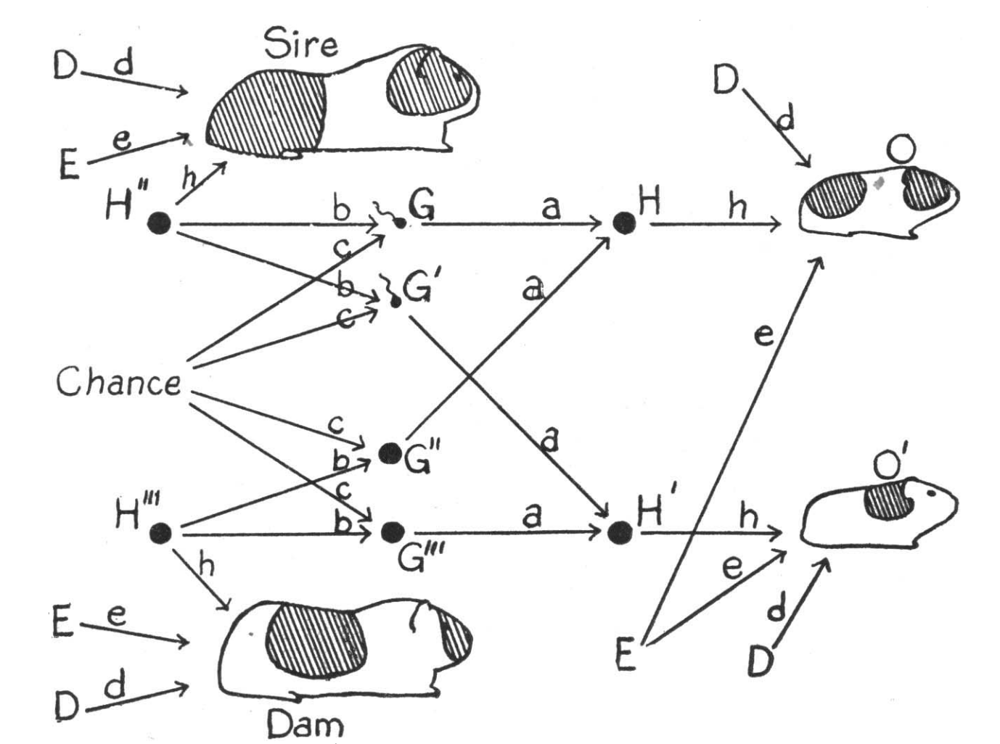

| X1 | X2 | X3 | Y | |
|---|---|---|---|---|
| X1 | 974.58 | 60.32 | 524.28 | 23.77 |
| X2 | 60.32 | 942.58 | -71.68 | 547.40 |
| X3 | 524.28 | -71.68 | 1140.97 | 40.05 |
| Y | 23.77 | 547.40 | 40.05 | 1167.95 |
Introduction to path and structural equation modelling
Day 1: Path and structural equation model estimation
Frank Pennekamp
Department of Evolutionary Biology and Environmental Sciences, University of Zurich
November 4, 2026
How to estimate path and SE models?
- Path and structural equation modelling is a framework for causal reasoning rather than a statistical technique.
- Global estimation: based on variance-covariance matrix.
- Lavaan uses Maximum likelihood estimation (ML).
- Lavaan makes several assumptions:
- (Multivariate) normality of endogenous (but not exogenous!) variables
- Linear relationships among variables (transformations allowed)
Observed variables and their relationships

Scatter plots of observed variables and fitted lines.
Estimated variance-covariance matrix
- Variances on the diagonal, covariances on the off-diagonal elements
- Variance: \(VAR_{x}=\frac{\sum_{i=1}^{N}(x_{i}-\bar{x})^2}{N-1}\)
- Variance is the degree of spread in a set of data.
- Covariance: \(COV_{x,y}=\frac{\sum_{i=1}^{N}(x_{i}-\bar{x})(y_{i}-\bar{y})}{N-1}\)
- Covariance measures how much two variables are moving together.
Correlation matrix estimated from data
| X1 | X2 | X3 | Y | |
|---|---|---|---|---|
| X1 | 1.00 | 0.06 | 0.50 | 0.02 |
| X2 | 0.06 | 1.00 | -0.07 | 0.52 |
| X3 | 0.50 | -0.07 | 1.00 | 0.03 |
| Y | 0.02 | 0.52 | 0.03 | 1.00 |
- Correlation: \(COR_{x,y}=\frac{COV_{x,y}}{\sigma_x*\sigma_y}\)
- Correlation matrix is standardized variance-covariance matrix
Path tracing rules - deriving path coefficients from correlations
The idea behind path tracing
Sewall Wright (1918, 1934): the correlation between any two variables can be decomposed into the paths that connect them in a causal diagram.

- Each path in the diagram carries a coefficient.
- A correlation is rebuilt by summing over the routes that connect two variables, multiplying the coefficients along each route.
- Fitting a structural equation (SE) model reverses this logic: finding the coefficients whose implied correlations match the observed ones.
The path diagram we will use
- X₁, X₂ are exogenous and correlated (double-headed arrow).
- Y₁, Y₂ are endogenous variables, Y₁ is a mediator with two causes; Y₂ is the outcome.
- X₁ affects Y₂ directly and indirectly through Y₁.
- Coefficients are standardized, so traced routes give correlations directly.
Rule 1: exogenous correlations
An unspecified relationship between two exogenous variables is their bivariate correlation, drawn as a double-headed arrow (r).
Rule 2: single paths
Imagine path d does not exist. For two variables joined by a single directed arrow: the path is the regression coefficient (c). For standardized data it equals their correlation.
Rule 3: compound paths
A route through intermediate variables is the product of its coefficients — the indirect effect of X₁ on Y₂ runs X1 → Y1 → Y2 and equals a · c.
Rule 4: partial coefficients for multiple paths
When a variable has several causes, each path is a partial regression coefficient — it controls for the others.
For the two causes of Y₂ (Y₁ and X₁): \[ \beta_{X_1 \rightarrow Y_2} = \frac{r_{X_1,Y_2} - r_{X_1,Y_1}\, r_{Y_1,Y_2}}{1 - r_{X_1,Y_1}^2} \]
Rule 5: endogenous errors
Every endogenous variable carries an error (disturbance) term, denoted by ζ, for unexplained variance. Its variance is \(1 - R^2\) and the standardized error path is \(\zeta = \sqrt{1 - R^2}\).
Rule 6: residual correlations (partial correlation)
If two endogenous variables share an unmeasured cause, their partial correlation (after removing shared predictors) is drawn as a double-headed arrow between their errors (ψ).
This needs a sibling structure — it cannot coexist with a direct Y₁ → Y₂ path.
\[ r_{Y_1,Y_2} = \underbrace{\gamma_1 \gamma_2}_{\text{shared cause } X} + \underbrace{\psi}_{\text{partial corr.}} \]
If Y₁ and Y₂ are conditionally independent given X, then ψ = 0 and their correlation is just \(\gamma_1\gamma_2\).
Rule 7: total effects
The total effect of one variable on another is the sum of its direct and indirect effects.
\[ \text{total}(X_1 \rightarrow Y_2) = \underbrace{d}_{\text{direct}} + \underbrace{a\,c}_{\text{indirect}} \]
Rule 8: total effect ≠ total correlation
The correlation also contains undirected routes (through the exogenous correlation).
Causal routes + non-causal routes = the observed correlation.
\[ r_{X_1,Y_2} = \underbrace{d + a c}_{\text{total effect (causal)}} + \underbrace{r\,b\,c}_{\text{backdoor (non-causal)}} \]
Tracing a valid route
- No loops — never pass through a variable twice.
- No forward-then-backward — connect only through a common cause, never a common effect (collider).
- At most one curved arrow per route.
For r(X₁, Y₁): valid in green; the red route turns around at the collider Y₂ — forbidden.
Worked example
The model in numbers
Tracing rebuilds the implied correlation matrix on the right.
| X1 | X2 | Y1 | Y2 | |
|---|---|---|---|---|
| X1 | 1.00 | 0.30 | 0.720 | 0.660 |
| X2 | 0.30 | 1.00 | 0.580 | 0.380 |
| Y1 | 0.72 | 0.58 | 1.000 | 0.716 |
| Y2 | 0.66 | 0.38 | 0.716 | 1.000 |
Simple paths and the curved arrow
| X1 | X2 | Y1 | Y2 | |
|---|---|---|---|---|
| X1 | 1.000 | 0.300 | 0.720 | 0.660 |
| X2 | 0.300 | 1.000 | 0.580 | 0.380 |
| Y1 | 0.720 | 0.580 | 1.000 | 0.716 |
| Y2 | 0.660 | 0.380 | 0.716 | 1.000 |
\[ \text{cor}(X_1, Y_1) = a + r\,b = 0.60 + 0.30\times 0.40 = \mathbf{0.72} \]
\[ \text{cor}(X_2, Y_1) = b + r\,a = 0.40 + 0.30\times 0.60 = \mathbf{0.58} \]
Direct, indirect and backdoor routes
| X1 | X2 | Y1 | Y2 | |
|---|---|---|---|---|
| X1 | 1.000 | 0.300 | 0.720 | 0.660 |
| X2 | 0.300 | 1.000 | 0.580 | 0.380 |
| Y1 | 0.720 | 0.580 | 1.000 | 0.716 |
| Y2 | 0.660 | 0.380 | 0.716 | 1.000 |
\[ \text{cor}(X_1, Y_2) = d + a c + r b c = 0.30 + 0.30 + 0.06 = \mathbf{0.66} \]
\[ \text{cor}(X_2, Y_2) = b c + r d + r a c = 0.20 + 0.09 + 0.09 = \mathbf{0.38} \]
Backward-then-forward
| X1 | X2 | Y1 | Y2 | |
|---|---|---|---|---|
| X1 | 1.000 | 0.300 | 0.720 | 0.660 |
| X2 | 0.300 | 1.000 | 0.580 | 0.380 |
| Y1 | 0.720 | 0.580 | 1.000 | 0.716 |
| Y2 | 0.660 | 0.380 | 0.716 | 1.000 |
\[ \text{cor}(Y_1, Y_2) = c + a d + b r d = 0.50 + 0.18 + 0.036 = \mathbf{0.716} \]
Total effect vs total correlation
Total effect of X₁ on Y₂ (Rule 7) — direct + indirect:
\[ d + a c = 0.30 + 0.30 = \mathbf{0.60} \]
Correlation (Rule 8) — the effect plus the undirected backdoor:
\[ r_{X_1,Y_2} = 0.60 + \underbrace{r\,b\,c}_{0.06} = \mathbf{0.66} \]
Partial coefficient (Rule 4 check) recovers the direct path d:
\[ \beta_{X_1 \rightarrow Y_2} = \frac{0.66 - 0.72\times 0.716}{1 - 0.72^2} = \mathbf{0.30} = d \]
| X1 | X2 | Y1 | Y2 | |
|---|---|---|---|---|
| X1 | 1.000 | 0.300 | 0.720 | 0.660 |
| X2 | 0.300 | 1.000 | 0.580 | 0.380 |
| Y1 | 0.720 | 0.580 | 1.000 | 0.716 |
| Y2 | 0.660 | 0.380 | 0.716 | 1.000 |
Errors and R²
| Variable | R2 | ζ = √(1 − R2) |
|---|---|---|
| Y1 | 0.664 | 0.580 |
| Y2 | 0.556 | 0.666 |
| X1 | X2 | Y1 | Y2 | |
|---|---|---|---|---|
| X1 | 1.000 | 0.300 | 0.720 | 0.660 |
| X2 | 0.300 | 1.000 | 0.580 | 0.380 |
| Y1 | 0.720 | 0.580 | 1.000 | 0.716 |
| Y2 | 0.660 | 0.380 | 0.716 | 1.000 |
Each endogenous variable’s variance is completed by its ζ (exogenous X₁, X₂ have none), making its diagonal entry 1:
\[ 1 = R^2 + \zeta^2 \]
In standardized correlations the error is only implicit: fixes the endogenous diagonal but drops out of the off-diagonal cells — which is why none of the traced routes contained ζ.
Using covariances instead of correlations
- So far we used correlations and standardized coefficients, where every variance = 1.
- In practice, SEMs are fit to covariances with unstandardized coefficients — so the variances must be carried along.
Tracing the covariance of Y₁ and Y₂ (c, d, a unstandardized):
\[ \begin{aligned} \text{Cov}(Y_1, Y_2) &= c\,\text{Var}(Y_1) + d\,\text{Cov}(X_1, Y_1) \\ &= \underbrace{c\,\text{Var}(Y_1)}_{Y_1 \to Y_2} + \underbrace{a\,d\,\text{Var}(X_1)}_{Y_1 \leftarrow X_1 \to Y_2} \end{aligned} \]
Summary of path tracing rules:
Wright’s route rules: no loops, no forward-then-backward, ≤ one curved arrow.
- Exogenous correlations = bivariate correlation (double-headed arrow).
- A single path = its coefficient (= correlation if standardized).
- A compound path = the product of its coefficients.
- Multiple pathways = partial coefficients (control for the others).
- Endogenous errors: \(\zeta = \sqrt{1 - R^2}\).
- Residual correlation between endogenous = partial correlation (correlated errors).
- Total effect = direct + indirect.
- Total effect ≠ total correlation (the correlation also includes undirected routes).
Global estimation: compare model-implied to observed covariance

- In practice, lavaan handles the path tracing automatically.
- The model is fit to the observed covariance matrix (or correlation matrix).
- Assess goodness of fit by comparing model-implied to observed covariance matrix.
Model fit measures
- \(\chi^2\) statistic
- Compare the model-implied to the observed variance-covariance matrix
- Good fit when \(\chi^2\) statistic is small and p value large (P > 0.05)
- Sample-size dependent
- Comparative fit index (CFI):
- Deviation from a ‘null’ model (variances estimated but covariances set to 0)
- Higher is better: > 0.95 is considered good.
- Sample-size independent
- Root-mean squared error of approximation (RMSEA)
- How well does the model fit the population covariance matrix?
- Lower is better: < 0.10 is acceptable, and anything < 0.06 is good
- RMSEA misbehaves for models with small df and small N
- Standardized root-mean squared residual (SRMR)
- Caculates the average discrepancy between observed and reproduced correlations
- Lower is better: < 0.08 is considered good
Best practice: combine multiple fit indices, do not rely on just one.
Modification indices
What if the model does not fit?
- Modification indices (MIs) can be used to identify which parameters, if freed, would improve model fit.
- The modification index is the χ2 value, with 1 degree of freedom, by which model fit would improve if a particular path was added or constraint freed.
- Values bigger than 3.84 indicate that the model would be ‘improved’, and the p value for the added parameter would be < .05
- MIs need to be used with caution: some suggestions may be non-sensical.
- MIs can aid in improving the model, but should be strictly used in combination with domain or theoretical knowledge.
- Adjustments using MIs should be treated as exploratory rather than confirmatory and reported transparently.
Unstandardized vs standardized coefficients
| Unstandardized | Standardized |
|---|---|
| Reported in raw units (scale dependent) | Expressed in units of standard deviations (z transformation) |
| Used to compare across populations | Used for interpretation of relative strength |
| Contain information about variance and mean | Facilitate comparison of paths within a model |
| For predictions in original units | To calculate indirect and total effects within your model |
Complementary information: report both types of coefficients!
Z transformation results in mean of 0 and SD of 1: \(Z = \frac{x - \mu(x)}{\sigma(x)}\)
Model identification
- Identifiability is a common issue in SEM
- Some of the free parameters you are trying to estimate are interchangeable (e.g., a and b in
y = a*x + b*x + c) - Even an infinite amount of data does not allow to identify parameters precisely (e.g. one could be high the other low or vice-versa)
- The more complex a SEM is, the more likely issues of identifiability will become
- Fixing parameters or their variance may be needed to achieve model convergence (especially when latents or composites are involved).
- Underidentified: Not enough pieces of information to identify parameters uniquely (df < 0).
- Just identified: Just enough information to uniquely identify parameters, but no df to check model fit (df = 0).
- Over-identified: Parameters can be uniquely identified and positive dfs to test model goodness-of-fit (df > 0).
Model identification
“t-rule” to quickly gauge whether a model is under-, just, or overidentified:
\[ t \leq \frac{n (n + 1 )}{2} \]
t = number of unknowns (parameters to be estimated, i.e. variances & covariances)
n = number of knowns (observed variables).
The LHS is how many pieces of information we want to know.
RHS: information we have (number of unique cells in the observed variance-covariance matrix).
Model identification example
\[ t \leq \frac{n (n + 1 )}{2} \]
Unidentified:
- a + b = 8
- multiple possible solutions (e.g., a=7, b=1, a=6, b=2 …)
Just identified:
- add equation a = 3b allows to solve the system
- Single solution a = 6 and b = 2
Over-identified:
- add equation 2a - 4 = 4b gives us more information than we need
Model identification example
Can we identify this simple mediation model?
- How many many pieces of information do we have (n) and how many do we need to estimate (t)?
\[ 5 \leq \frac{3 (3 + 1 )}{2} \] \[ 5 \leq 6 \]
Troubleshooting pathological models (a.k.a. Heywood cases)
- Improper solutions:
- Negative variances
- Correlations larger than 1
- Reasons for the warnings can be:
- Slightly negative error estimates (not really a problem)
- Local non-identification of parameters
- Model misspecification
- Slightly negative error estimates (not really a problem)
Variable types: continuous
- Exogenous variables:
- No limitations
- Endogenous variables:
- lavaan handles Gaussian error distributions.
- Transformations can be applied to the dependent variable to meet this assumption.
Variable types: categorical
- Includes binary (yes/no, failure/success, etc.), nominal (site 1, site 2), or ordinal levels (small < medium < large) variables.
- nominal variables currently not covered by lavaan
- Exogenous variables:
- code binary variables as dummy variable (0/1)
- if more than 2 levels, create multiple dummy variables
- Endogenous variables:
- for binary and ordinal variables, use R’s
ordered()function to specify the order, or useordered=argument. - when
ordered=argument is used, WLSMV estimator is used by lavaan.
- for binary and ordinal variables, use R’s
- Bootstrapping approach to get robust standard error estimates due to non-normal errors when dealing with categorical variables.
Data requirements
- Replication should be at least 5x the number of estimated coefficients (not error variances or other correlations).
- To estimate two relationships, at least n = 10 required to fit model.
- Ideally, replication is 5-20x the number of estimated parameters.
- The larger the sample size, the more precise your estimates will be.
Questions?
Live coding session
Introduction to path and structural equation modelling (2026)